Next: About this document ...
E84 Home Work 8
- In the circuit below, 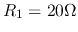,
 , 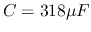,
and the sinusoidal voltage source is
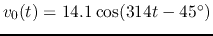.
Find the complete voltage response 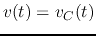 across
, 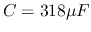,
and the sinusoidal voltage source is
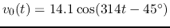.
Find the complete voltage response 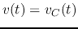 across  and
and  after
the switch closes at
after
the switch closes at  .
.
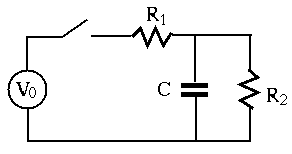
- An RCL series circuit composed of , 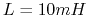 and
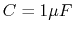 is connected to an input AC voltage
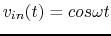.
- Find the quality factor 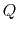 and resonant frequency 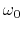.
- Assume the voltage
 across 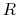 is taken as the output voltage.
Find the bandwidth of the circuit. Also, use any software (e.g., Matlab)
to plot the ratio of the magnitudes between the output and input voltages
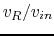 as a function of frequency .
across 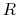 is taken as the output voltage.
Find the bandwidth of the circuit. Also, use any software (e.g., Matlab)
to plot the ratio of the magnitudes between the output and input voltages
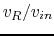 as a function of frequency .
- Assume the voltage 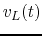 across
 is taken as the output voltage.
plot the ratio 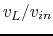 as a function of frequency .
is taken as the output voltage.
plot the ratio 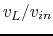 as a function of frequency .
- Assume the voltage
 across is taken as the output voltage.
plot the ratio 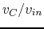 as a function of frequency .
across is taken as the output voltage.
plot the ratio 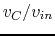 as a function of frequency .
- A series circuit composed of a capacitor and an inductor is to be
resonant at 800 kHz with voltage input. Specify the value of for the
capacitor required for the given inductor with 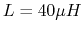 and an internal
resistance
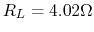, and predict the bandwidth. Assume the capacitor
is ideal, i.e., it introduces no resistance.
- Design a parallel circuit to be resonant at 800 kHz with a bandwidth
of 32 kHz. The inductor has and
. Find the
capacitance needed for the desired resonant frequency. In order to
satisfy the desired bandwidth, you may also need to include a resistor in
the circuit.
- The function of a loudspeaker crossover network is to channel
frequencies higher than a given crossover frequency 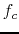 into the
high-frequency speaker (``tweeter'') and frequencies below into
the low-frequency speaker (``woofer''). One such circuit is shown below.
Assume the resistances of the tweeter is 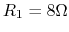 and that of the
woofer is 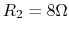, the voltage amplifier can be modeled as an
ideal voltage source, and the crossover frequency is 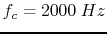.
Design the network in terms of and so that is the corner
freqnency or half-power point of each of the two speaker circuits. Give
the expression of the power 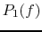 and 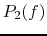 of the speakers as a
function of frequency 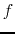 and crossover frequency , and sketch them.
Assume the RMS of the input voltage is 1V.

Next: About this document ...
Ruye Wang
2016-10-23